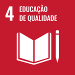
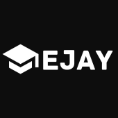

Durante um semestre de uma faculdade, os professores unificaram as matérias e pediram para que os alunos criassem um produto a partir da escolha de uma das ODS da ONU. A ODS escolhida nesse projeto foi a ODS 4, que diz respeito a educação, com a problemática 4.4 que tem como meta específica aumentar substancialmente o número de jovens e adultos que tenham habilidades relevantes, inclusive competências técnicas e profissionais, para emprego, trabalho decente e empreendedorismo até o ano de 2030. Reconhecendo a importância crucial desse objetivo e visando ajudar esses jovens e adultos a conseguirem adquirir habilidades relevantes, nos criamos o EJAY.
Com o surgimento da internet e os impactos da pândemia, a infromação vem sendo espalhada em todo lugar, a todos os dias e de livre acesso para todos aqueles que possuem um aparelho digital. Pensando nesses aconteceimentos e na problemática 4.4 das ODS, nos criamos o EJAY. O EJAY é uma platarforma informativa onde você poderá encontrar vários cursos gratuitos de diversas áreas disponíveis no YouTube, ferramentas úteis disponíveis gratuitamente na internet e recomendações de outras plataformas que fornecem serviços gratuitos ou pagos de cursos com direito a certificados.
Dedique-se ao seu desenvolvimento profissional!. Com cursos projetados para atender a todos os níveis de habilidade o EJAY disponibiliza, através de playlists gratuitas disponíveis no YouTube, a maior quantidade de cursos possíveis com a melhor qualidade encontrada e tentando cobrir a maior quantidade de áreas possivéis para que todos possam se beneficiar e desenvolver habilidades.
Explore e descubra as ferramentas disponíveis no EJAY!. Nossa plataforma oferece acesso a uma ampla gama de sites na internet, escolhidos através de pesquisas para apoiar de alguma maneira suas atividades e projetos da melhor maneira possivel. Acreditamos na importância de fornecer diversas opções para atender às necessidades dos usuários, independete do nível de habilidade.
Conheça outros sites que podem te ajudar na sua formação!. Através de algumas pesquisas feitas na internet, nos disponibilizamos no EJAY outras plataformas de ensino que podem te ajudar na construção da sua carreira ou simplismente no desenvolvimento de novas habilidade dependendo do seu objetivo. Algumas delas possuem serviços gratuitos e outras pagas com geração certificados.